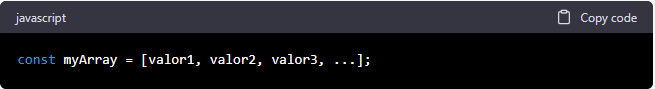
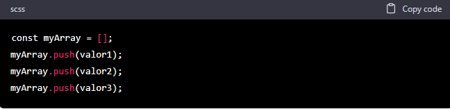
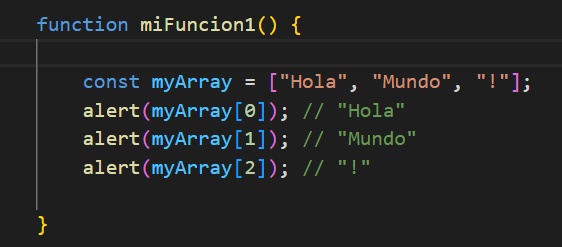
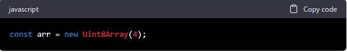
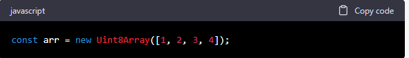
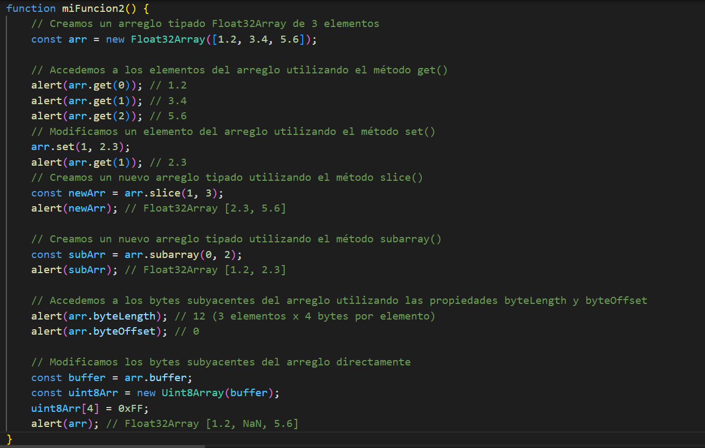

Colecciones indexadas

Arreglos
En JavaScript, un arreglo es una estructura de datos que nos permite almacenar y acceder a múltiples valores a través de un solo identificador. Los arreglos en JavaScript son objetos indexados por números enteros, y cada elemento del arreglo puede ser cualquier tipo de dato, como números, cadenas, objetos, funciones, etc.
Para crear un arreglo en JavaScript, podemos utilizar la siguiente sintaxis:
Donde valor1, valor2, valor3, etc. son los valores que queremos almacenar en el arreglo. También podemos crear un arreglo vacío y luego agregar elementos al mismo utilizando el método push():
Podemos acceder a los elementos de un arreglo utilizando su índice numérico, comenzando por el índice 0 para el primer elemento. Por ejemplo:
Los arreglos en JavaScript también proporcionan una serie de métodos útiles para manipular los elementos del arreglo, como push(), pop(), shift(), unshift(), splice(), concat(), join(), slice(), reverse(), sort(), entre otros.
Arreglos tipados
Los arreglos tipados en JavaScript son una característica que se introdujo en ECMAScript 6 para permitir la manipulación eficiente de datos binarios en el navegador y en el servidor. A diferencia de los arreglos regulares en JavaScript, que pueden contener cualquier tipo de datos, los arreglos tipados se limitan a un solo tipo de datos y proporcionan acceso a los bytes subyacentes del arreglo, lo que permite la manipulación directa de datos binarios.
Los arreglos tipados disponibles en JavaScript son:
- Int8Array: Almacena enteros de 8 bits con signo
- Uint8Array: Almacena enteros de 8 bits sin signo
- Uint8ClampedArray: Almacena enteros de 8 bits sin signo con límite
- Int16Array: Almacena enteros de 16 bits con signo
- Uint16Array: Almacena enteros de 16 bits sin signo
- Int32Array: Almacena enteros de 32 bits con signo
- Uint32Array: Almacena enteros de 32 bits sin signo
- Float32Array: Almacena números de punto flotante de 32 bits
- Float64Array: Almacena números de punto flotante de 64 bits
- BigInt64Array: Almacena enteros de 64 bits con signo
- BigUint64Array: Almacena enteros de 64 bits sin signo
Para crear un arreglo tipado, podemos utilizar el constructor correspondiente y especificar el tamaño del arreglo como un parámetro. Por ejemplo, para crear un arreglo tipado Uint8Array de 4 elementos, podemos hacer lo siguiente:
También podemos inicializar el arreglo con valores iniciales utilizando un arreglo regular como argumento del constructor. Por ejemplo:
Aquí hay un ejemplo de cómo podemos usar un arreglo tipado en JavaScript:
